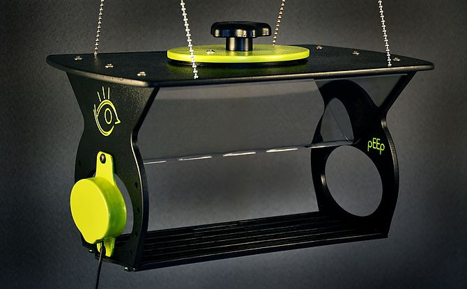
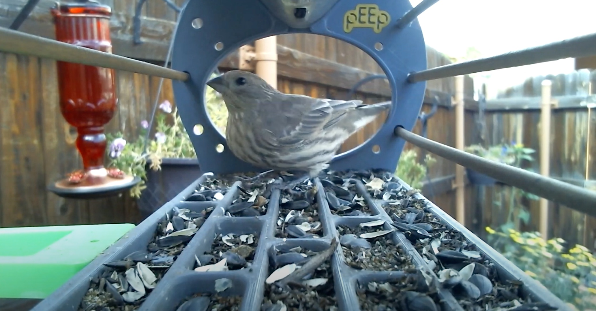
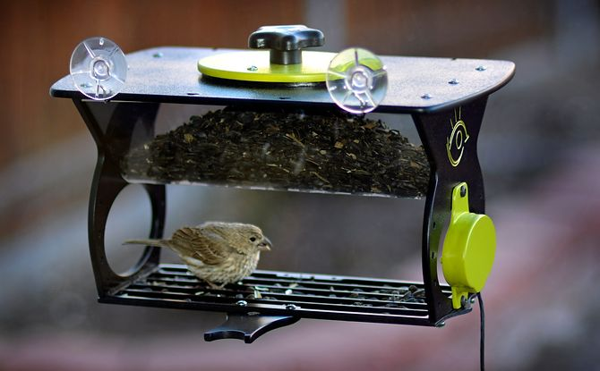
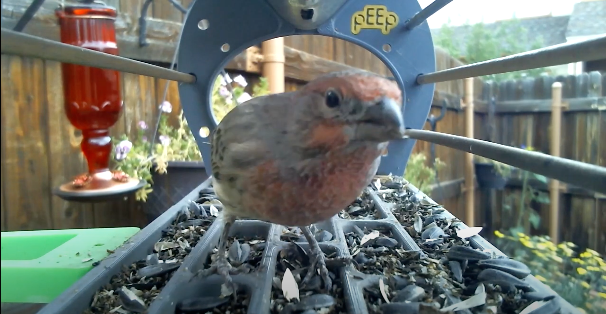

Description
Our project, Computer Vision Indentification
for Smart Bird Feeders, will encourage the expansion of the bird-enthusiast
community. We will be creating a web application for David Plemmons,
the owner and creator of pEEp bird feeders.
We will be implementing an AI model that will be able to indentify
species of birds from the photos provided by the pEEp bird feeder. As
well as creating an easy way to share user images.


Requirements
Ability to automatically identify bird species.
Image organization that allows for
photo sharing, image capturing, and naming of the bird species.
Forums and online sharing for user submitted data,
to further build the bird-enthusiast community.
Limitations
The current limitations are not having a reliable way to indentify bird
species from the photos taken by the pEEp bird feeder. Meaning,
users do not have an expert to confirm their bird classifications.
Additionally, there is no organizational system for the users to share
their images. Lastly, users are unable to track individual birds who could
possibly be frequent visitors.


Solution
Our solution is to develop a web application for David that is a easily
navigable for users. Additionally, we will be implementing an AI model that can
identify bird species.